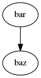

1 2 3 4 5 6 7 8 9 10 11 12 13 14 15 16 17 18 | /*
* Copyright (c) 2011-2014 Haener Consulting. All rights reserved.
*/
package virtufin
package object finance {
/**
* The default type for [[virtufin.util.TimePoint]]
*/
type Time = virtufin.util.Day
def Time(year: Int, month: Int, day: Int) = virtufin.util.Day(year, month, day)
//type Time=virtufin.util.TimePoint
type Term = virtufin.util.Term[Time]
}
|

Danger
Test